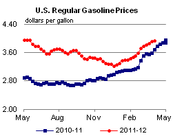
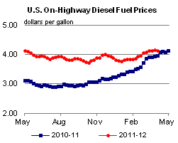
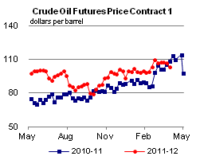
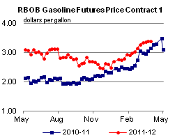
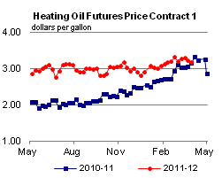
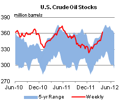
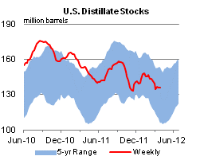
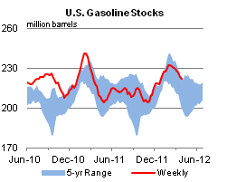
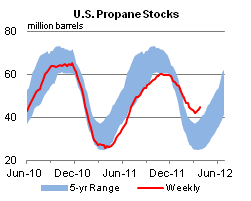

Released: April 4, 2012
Next Release: April 11, 2012
Adding Barges to EIA Study Still Leaves Concerns
The U.S. Energy Information Administration's (EIA) recent report exploring the potential impacts of reductions in refinery activity in the Northeast on petroleum product markets in that region pointed out that, if Sunoco's Philadelphia refinery shuts down, waterborne movements from the Gulf Coast could be an important route for alternative supplies to help replace lost volumes in the short term, particularly for ultra-low sulfur diesel (ULSD). Because this route would involve vessel movements between U.S. ports, Jones Act vessels must be used. The Jones Act requires goods or passengers moved in U.S. coastal waters between U.S. ports to be carried on U.S. flagged ships that are constructed in the United States, and owned and crewed by U.S. citizens.
EIA's report mentioned 56 Jones Act tankers handling petroleum, including tankers being decommissioned. But the table did not show the many barges that are also used to transport petroleum in coastal waters. Updated information suggests that less than 40 tankers and perhaps as many as 270 coastal barges[1] are in operation. However, as discussed below, delivery of a large volume of petroleum products on a sustained basis from the Gulf Coast to the Northeast still appears to represent a significant challenge in the short run.
Some years ago, short vessel runs were the province of tug tank barges, while tankers handled the longer routes. But today long ocean-going routes are also covered by articulated tug barges (ATBs) and large barges. The ATB design provides stability, speed (up to 12 or 13 knots), and increased maneuverability over the traditional barge units, and they are large, at least 10,000 dead weight tons (DWT), which is the equivalent of about 75,000 barrels of diesel. These vessels have provided an alternative to tankers.
Of the approximately 300 vessels now in use, not all are capable of moving from the Gulf Coast to the Northeast due to size, and others would not likely be available in the short term due to other factors. While 50,000 barrel capacity would appear to be a minimum vessel size to serve this route, historically vessels moving product from the Gulf Coast to the Northeast range in size from about 80,000 to 145,000 barrels.[2] Many of the smaller Jones Act vessels are used in New York Harbor to move product among different ports in the area and to transport product from the harbor to New England.
About ten Jones Act tankers are crude oil tankers used to haul Alaskan crude oil to the West Coast; other tankers and barges are involved in West Coast product movement. It is not clear that any of the product vessels normally used on the West Coast would be diverted temporarily or even permanently to serve a new East Coast need.
About 30 percent of the petroleum-carrying Jones Act vessels move crude oil or dirty products (e.g., asphalt, residual fuel oil). In general, ship owners would not spend the time and money to convert vessels carrying crude oil or dirty products to transport clean products in the short run; however, such vessels can be cleaned to carry products in the long term if sufficient incentives exist. For example, while an 80,000-barrel barge carrying crude condensate could be cleaned and ready to carry clean products in about three days for a cost of approximately $45,000, the cost to clean a vessel carrying a heavier grade of crude or comparable residual fuel could be $600,000 or more and would take additional time.[3]
In order for Jones Act vessels to transport additional products to the Northeast and leave other areas unaffected, sufficient capacity is required. The operating vessels mentioned above are not currently idled, and, while improved scheduling might free up some vessels, others would have to be diverted from their current routes to respond to an increased need to move product into the Northeast. For example, a number of vessels are involved in spot transactions, and could be almost immediately available. However, Northeast petroleum product demand might require a sustained need for product flow to the Northeast; not a one-time diversion. A diversion for 3 weeks has different implications on existing service than a diversion for 3 or 6 months. The size and duration of the need, and the amount of time available to schedule product moves in advance, affects the availability and cost of vessels.
To provide some perspective, our report on the Northeast closures indicated 180,000 barrels per day (bbl/d) of ultra-low-sulfur diesel fuel must be made up by increased imports, pipeline flows, and domestic waterborne movements. (We assumed increased utilizations for existing Northeast refineries before estimating the 180,000 bbl/d additional supply needs.) Although pipelines are near capacity in the short run, they can add some additional volume. This could result in the need to move 100,000 bbl/d by water. Using vessels sized at 100,000 barrels capacity, that demand would require offloading one vessel per day in the Northeast.
If the entire waterborne product came from the Gulf Coast, we would need to know the duration of the journey in order to estimate the number of vessels needed. A trip from the Gulf Coast to the Northeast is about 2,000 nautical miles. An ATB traveling at 10 nautical miles per hour (knots) could make the trip in 8 days. There is time needed to offload the cargo and then return. The round trip might be about 20 days, depending on weather and time to load and offload the vessels.
If we assume that vessels sized at 100,000 barrels were used to move the increased USLD volume, approximately 20 vessels would be required to load, travel to the Northeast, unload, and travel back to maintain 100,000 bbl/d. If larger vessels are available, fewer would be needed. For example if 170,000-barrel vessels were used, then about 12 vessels would be required, and if large tankers could be devoted to this route, even fewer vessels would be needed. While a sizeable share of existing vessels may be needed, the industry has indicated the capability to respond would be there.[4]
Cost is one of the issues that will vary with how much product needs to be moved and how quickly. Consider a trip from Houston to Philadelphia. A 325,000-barrel tanker has economies of scale that make it more economic than the smaller barge movements that typically move on this route. While terms may vary with specific circumstances, such a tanker might cost around 7 cents per gallon for a round trip. ATB's would be less efficient than tankers, but more efficient than a towed barge. A barge cost for this route might run around 15 cents per gallon, perhaps a little less for the ATBs and a little more for towed barges. Tankers are in high demand and are usually booked well ahead of time. ATBs and large barges would likely be used for some of the movements to the Northeast, at least initially.
With transportation rates around 15 cents per gallon reportedly for Gulf Coast-Northeast barge movements, imports may be more economic for some of the needed volumes of ULSD. Foreign tankers are available, and a tanker moving product from Europe to New York Harbor (3,400 nautical miles) cost around 5-9 cents per gallon this past year, similar to the tanker costs from the Gulf Coast to New York Harbor.
As indicated in our report, the largest costs would likely be incurred during the initial transition period following a shutdown of the Sunoco Philadelphia refinery as the market resolves initial supply dislocations. While the maritime industry is flexible and confident of its ability to supply needed volumes, short-term flexibility is more limited than long-term flexibility. If the initial volume need is high, rerouting vessels from existing service may come at a higher cost than usual rates. Imports would play an important balancing role, potentially reducing the need for domestic shipping. While we acknowledge the U.S. maritime industry's confidence, it remains unclear exactly how and at what cost the Northeast would be supplied, and what, if any, additional costs might be incurred outside of the Northeast if significant domestic shipping is diverted from other uses in the short run.
Gasoline and diesel fuel prices move in opposite directions
The U.S. average retail price of regular gasoline increased 2.3 cents this week to reach $3.94 per gallon, 26 cents per gallon higher than last year at this time. The only decrease came on the West Coast, where the price fell for the first time since December 2011, to reach $4.23 per gallon. Despite seeing the largest increase in the Nation for the fifth consecutive week, the Rocky Mountain price remains the least expensive region at $3.75 per gallon. Moving east of the Rockies, the Gulf Coast and East Coast prices both increased about four cents to reach $3.80 per gallon and $3.91 per gallon, respectively. The Midwest price increased less than a penny to reach $3.91 per gallon.
The national average diesel fuel price decreased 0.5 cent to $4.14 per gallon, 17 cents per gallon higher than last year at this time. The Rocky Mountain and West Coast prices both decreased more than 1 cent to reach $4.13 per gallon and $4.42 per gallon, respectively. East of the Rockies, the Midwest and Gulf Coast prices decreased less than a penny to $4.04 per gallon and $4.05 per gallon, respectively. The East Coast price did not change, and remains at $4.19 per gallon.
Propane inventories post another large build
Total U.S. inventories of propane grew by 1.1 million barrels last week, ending at 44.8 million barrels. Current stock levels are 19.0 million barrels (74 percent) higher than the same week last year. The Midwest region added 0.5 million barrels, while the East Coast and Gulf Coast added 0.4 barrels and 0.2 million barrels, respectively. The Rocky Mountain/West Coast inventories were down slightly. Propylene non-fuel-use inventories represented 9.2 percent of total propane inventories.
Text from the previous editions of This Week In Petroleum is accessible through a link at the top right-hand corner of this page.
1The exact number of operating coastal barges varies by industry source. Also, MARAD lists 142 barges greater than 10,000 DWT as of December 31, 2010, "U.S.-Flag Oil Pollution Act of 1990 (OPA-90) Phase-Out" (Updated 03/31/11).
2 Information provided by The American Waterways Operators.
2Information provided by The American Waterways Operators.
3Information provided by The American Waterways Operators.
4Letter to the Secretary of the U.S. Department of Energy, Secretary of the U.S. Department of Homeland Security, and Secretary of the U.S. Department of Transportation from the Board of Directors, American Maritime Partnership, March 28, 2012.
|  |  | ||||||
| Retail Data | Change From Last | Retail Data | Change From Last | ||||
| 04/02/12 | Week | Year | 04/02/12 | Week | Year | ||
| Gasoline | 3.941 | Diesel Fuel | 4.142 | ||||
|  |  | ||||||||||||||||||||||||||
|
 | ||||||||||||||||||||||||||
| *Note: Crude Oil Price in Dollars per Barrel. | |||||||||||||||||||||||||||
|  |  | ||||||
|  |  | ||||||
| Stocks Data | Change From Last | Stocks Data | Change From Last | ||||
| 03/30/12 | Week | Year | 03/30/12 | Week | Year | ||
| Crude Oil | 362.4 | Distillate | 135.9 | ||||
| Gasoline | 221.9 | Propane | 44.783 | ||||